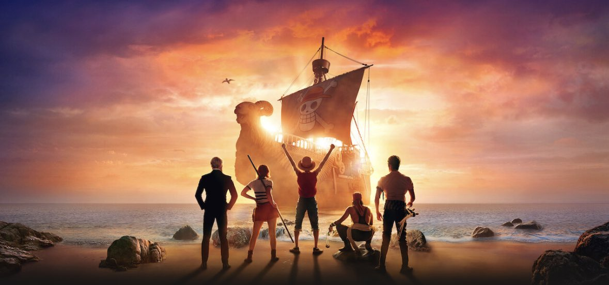

Desde sua estreia em 1997, o mangá "One Piece", criado por Eiichiro Oda, tem sido uma das obras mais icônicas e influentes no mundo dos quadrinhos e da animação japonesa. Com mais de duas décadas de histórias intrigantes, personagens memoráveis e uma mitologia própria, "One Piece" se estabeleceu como um fenômeno cultural global que transcende as gerações.

A premissa central de "One Piece" gira em torno da busca pelo tesouro lendário conhecido como o "One Piece". O protagonista, Monkey D. Luffy, lidera um grupo de piratas chamados de Chapéus de Palha enquanto navega pelas éguas perigosas da Grand Line. A ambição de Luffy é se tornar o Rei dos Piratas e reivindicar o tesouro definitivo escondido na misteriosa ilha de Laugh Tale.
Uma das maiores forças de "One Piece" é a riqueza de seus personagens. Cada membro dos Chapéus de Palha possui uma história de fundo única, motivações pessoais e habilidades especiais, tornando-os facilmente acessíveis e amados pelos fãs. Desde o espadachim
A notícia de que o amado mangá e anime "One Piece" será adaptado em uma série live action trouxe uma onda de excitação e especulação entre os fãs ao redor do mundo. A adaptação, que tem sido aguardada com ansiedade, promete trazer à vida os icônicos personagens e a empolgante narrativa da série que conquistou corações por décadas.
A transição de uma história tão intrincada e rica como "One Piece" para o formato live action é uma tarefa ambiciosa. A equipe por trás da adaptação enfrenta o desafio de capturar a essência dos personagens, explorar os mundos diversos e intricados e entregar a magia e a aventura que tornaram a série original tão popular.
A escolha do elenco para a adaptação é um dos aspectos mais debatidos pelos fãs. Encontrar atores que possam trazer à vida os membros carismáticos dos Chapéus de Palha e outros personagens memoráveis é uma decisão crítica. Fãs esperam que os atores escolhidos sejam capazes de capturar as características únicas e os relacionamentos complexos dos personagens originais.

Uma das preocupações dos fãs é se a adaptação live action permanecerá fiel ao material de origem. Muitos esperam que a série preserve os momentos emocionantes, os enredos cativantes e os temas profundos que tornaram "One Piece" tão popular. Uma abordagem cuidadosa para traduzir o estilo visual único e os elementos fantásticos da série animada é crucial para o sucesso da adaptação.
Apesar dos desafios que acompanham qualquer adaptação, os fãs permanecem otimistas e esperançosos de que a série live action de "One Piece" será uma homenagem digna à fonte original. A riqueza do universo de "One Piece" oferece uma oportunidade única para explorar a história de maneiras novas e emocionantes, ao mesmo tempo em que honra a jornada épica dos Chapéus de Palha.
Enquanto o lançamento da série live action de "One Piece" se aproxima, os fãs continuam a acompanhar de perto as atualizações e revelações sobre a produção. O desafio de trazer essa aclamada saga para as telas em uma forma totalmente nova é um testemunho da duradoura influência de "One Piece". Independentemente dos resultados finais, uma coisa é certa: a paixão e dedicação dos fãs garantirão que essa nova jornada seja seguida com grande interesse e entusiasmo.